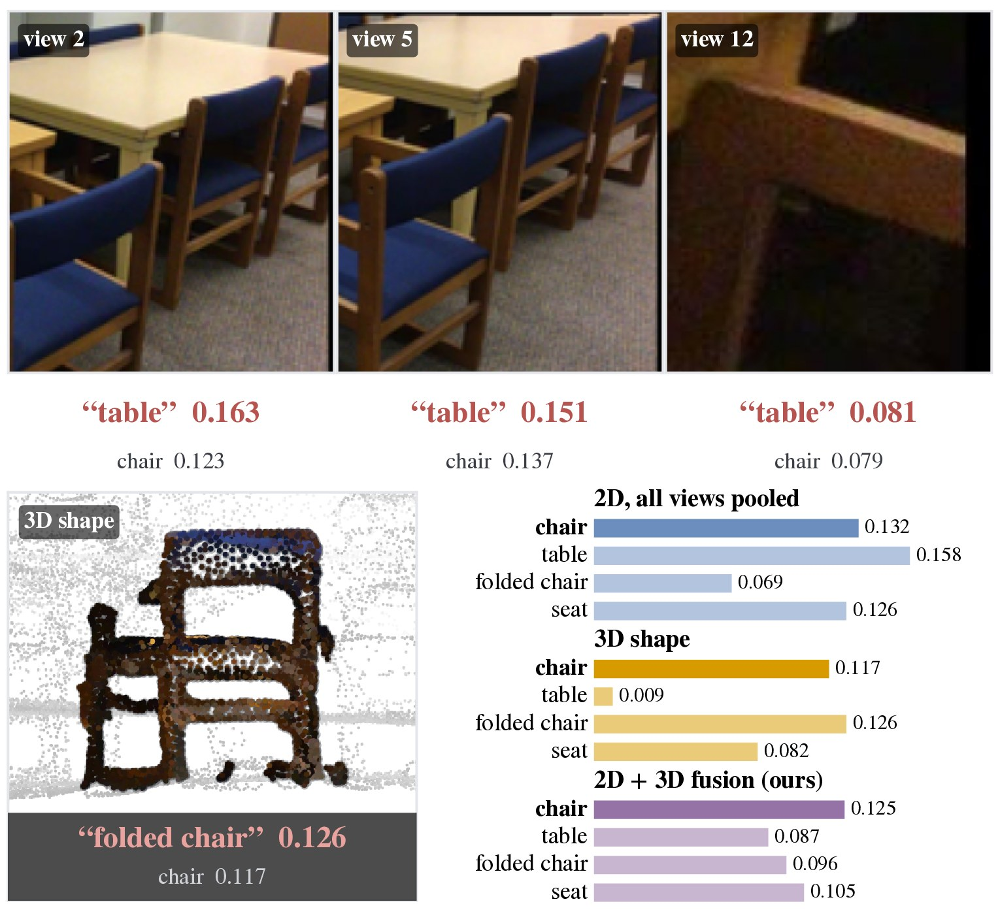
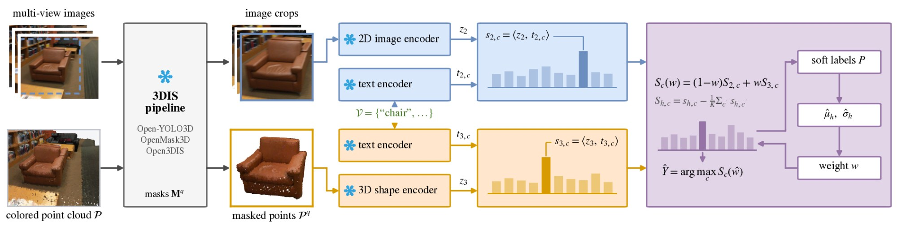
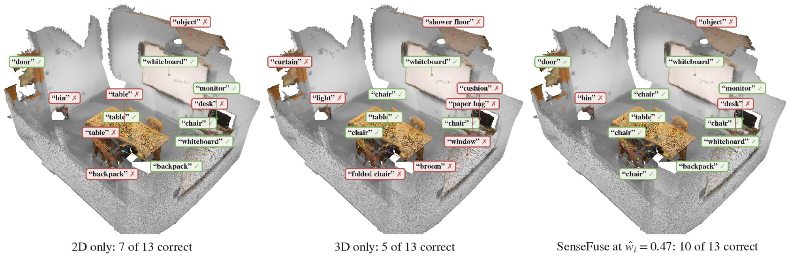

1Korea Advanced Institute of Science and Technology (KAIST)
Open-vocabulary scene understanding is fundamental for robotics, laying the groundwork for spatial reasoning and object manipulation. While closed-vocabulary 3D instance segmentation heavily leverages 3D shape information, state-of-the-art open-vocabulary methods remain predominantly restricted to 2D image features or image-distilled representations during mask labeling. In this paper, we propose SenseFuse, a label-free fusion method that balances 2D image and 3D shape encoders for robust open-vocabulary 3D instance segmentation, refining only the mask-labeling stage of existing pipelines. We reveal that 2D image and 3D shape encoders exhibit largely disjoint failure patterns and rarely share identical wrong labels, whereas two 2D image encoders frequently repeat the same errors. This distinct behavior makes the 2D and 3D pair inherently complementary. We introduce an adaptive mechanism that selects a scene-level fusion weight to maximize a label-free sensitivity measure, estimated directly from a single scene's unlabeled proposals in milliseconds. SenseFuse improves labeling accuracy in every evaluated setting across ScanNet200, Replica, and ScanNet++, recovering 67–100% (median 93%) of the gain achievable with an oracle weight, and it raises instance AP in 21 of 22 reported settings.

On ScanNet200, a 2D image encoder and a 3D shape encoder rarely share the same wrong label, whereas two 2D image encoders repeat each other's mistakes far more often. The 2D–3D pair, rather than a second 2D encoder, is therefore the profitable fusion target.

Labeling accuracy (%) on the validation sets, each scored with its benchmark's official class list. 2D: the pipeline's own labeling. SenseFuse: fused at the label-free weight. rec: fraction of the oracle-weight gain recovered.
| ScanNet200 | Replica | ScanNet++ | |||||||
|---|---|---|---|---|---|---|---|---|---|
| Pipeline | 2D | SenseFuse | rec | 2D | SenseFuse | rec | 2D | SenseFuse | rec |
| Open-YOLO3D (EVA) | 48.4 | 53.0 | 99% | 61.2 | 71.2 | 93% | 44.2 | 69.3 | 91% |
| Open-YOLO3D (CLIP) | 41.1 | 48.0 | 97% | 65.5 | 71.2 | 67% | 50.2 | 70.5 | 93% |
| OpenMask3D | 29.4 | 33.9 | 81% | 60.4 | 67.6 | 67% | – | – | – |
| Open3DIS† | 37.5 | 44.6 | 100% | 51.1 | 58.4 | 97% | 68.0 | 71.8 | 96% |
† Recomputed from raw cosine scores. OpenMask3D has no ScanNet++ proposals. Full results, including instance AP, are in the paper.

A walkthrough of the task, the failure patterns of the two encoders, and cases that fusion corrects, on ScanNet scenes.
@article{han2026sensefuse,
title = {SenseFuse: Label-Free Fusion of Image and Shape Encoders for Open-Vocabulary 3D Instance Segmentation},
author = {Han, Euiseok and Ton, Tri and Kim, Hwanhee and Ryu, Seungyeon and Yoo, Chang D.},
journal = {arXiv preprint arXiv:2609.20475},
year = {2026}
}